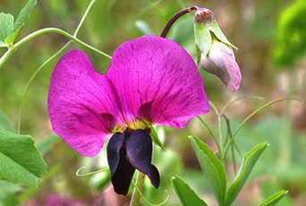

Specie: Pisum sativum
Taxonomy: Fabaceae; Papilionoideae; 50 kb inversion clade; NPAAA clade; Hologalegina; IRL clade; Fabeae; Pisum
Abbr: Psa
Level: Chromosome
chromosome number: 2n=2X=14

Introduction: The pea is most commonly the small spherical seed or the seed-pod of the flowering plant species Pisum sativum. Each pod contains several peas, which can be green or yellow. Botanically, pea pods are fruit, since they contain seeds and develop from the ovary of a (pea) flower. The name is also used to describe other edible seeds from the Fabaceae such as the pigeon pea (Cajanus cajan), the cowpea (Vigna unguiculata), and the seeds from several species of Lathyrus. Peas are annual plants, with a life cycle of one year. They are a cool-season crop grown in many parts of the world; planting can take place from winter to early summer depending on location. The average pea weighs between 0.1 and 0.36 gram. The immature peas (and in snow peas the tender pod as well) are used as a vegetable, fresh, frozen or canned; varieties of the species typically called field peas are grown to produce dry peas like the split pea shelled from a matured pod. These are the basis of pease porridge and pea soup, staples of medieval cuisine; in Europe, consuming fresh immature green peas was an innovation of early modern cuisine.
Distribution: The top producer of green peas – by far – is China with 12.2 million tons, followed by India (4.8 million tons), USA (0.31 million tons), France (0.23 million tons) and Egypt (0.15 million tons). United Kingdom, Pakistan, Algeria, Peru and Turkey complete the top 10.
Article Title: Improved pea reference genome and pan-genome highlight genomic features and evolutionary characteristics
Data source: Data from the Whole Genome Shotgun project of Pisum sativum cultivar Zhongwan6 (PeaZW6) have been deposited at DDBJ/ENA/GenBank under accession JAMSHJ000000000. All raw sequencing data and the 118 pan-genome assemblies have been deposited at NCBI under the BioProject PRJNA730094. The PeaZW6 assembly (https://doi.org/10.5281/zenodo.6622409), and the 118 pan-genome assemblies (https://doi.org/10.5281/zenodo.6622578) are also available as Zenodo datasets. The PeaZW6 assembly along with genome browser and basic analysis tools are also available at Pea Genome Database (https://www.peagdb.com/).